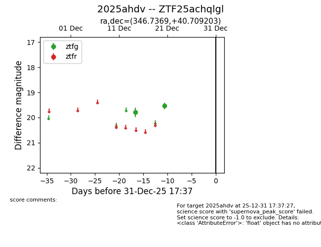
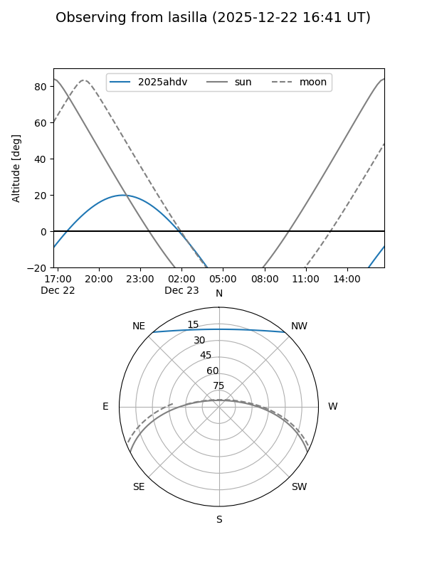
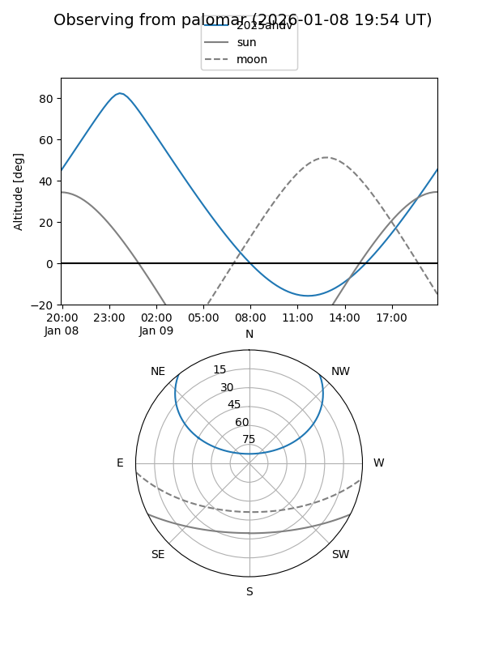

2025ahdv
Target 2025ahdv at 2025-12-21 03:22
Aliases and brokers:
FINK: fink-portal.org/ZTF25achqlgl
Lasair: lasair-ztf.lsst.ac.uk/objects/ZTF25achqlgl
ALeRCE: alerce.online/object/ZTF25achqlgl
TNS: wis-tns.org/object/2025ahdv
YSE: ziggy.ucolick.org/yse/transient_detail/2025ahdv
alt names
ZTF25achqlgl (ztf,fink_ztf)
2025ahdv (tns,yse)
Coordinates:
equatorial (ra, dec) = 346.7369,+40.70920
equatorial (HMS+DMS) = 23:06:56.85,+40:42:33.13
galactic (l, b) = (102.3927,-17.95825)
Flags:
Photometry:
last ztfg=19.54
2 ztfg detections
Lightcurve

Visibility


Additional plots